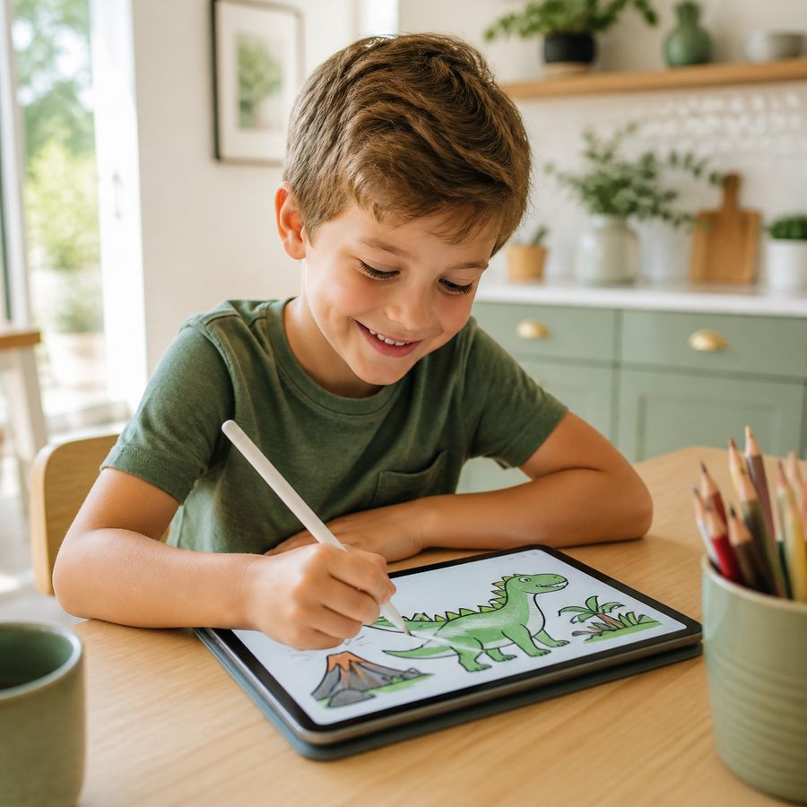
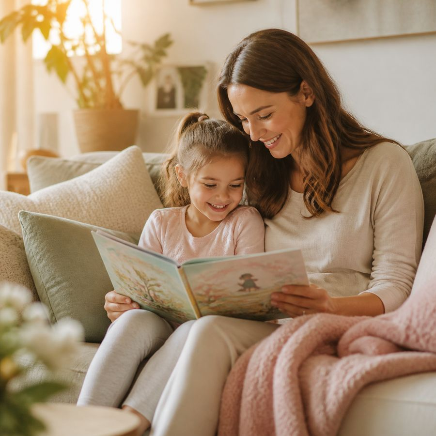
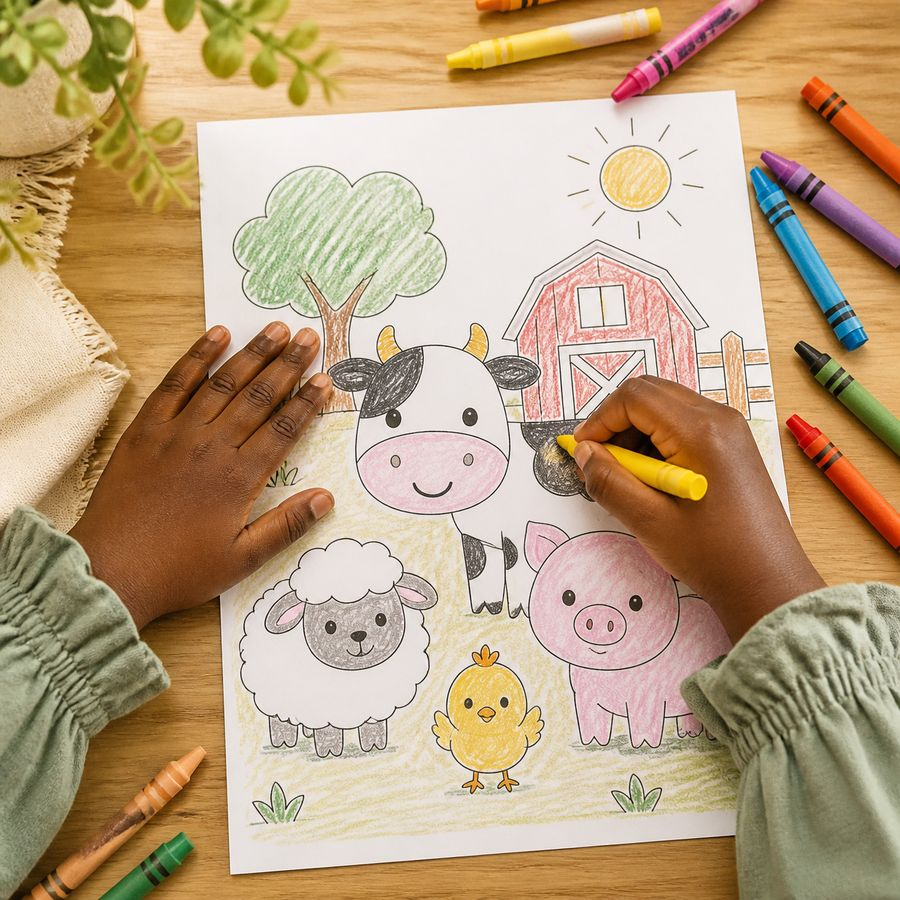
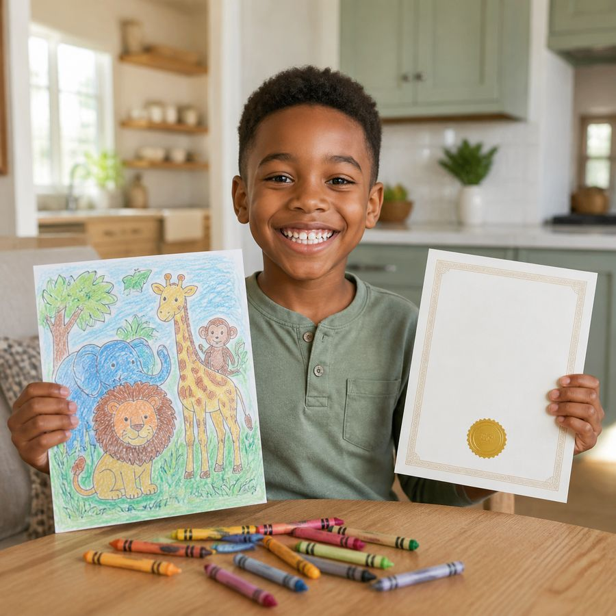

Stories and activities to print at home
Storybooks, activity books and colouring books for children aged 4 to 10, in English and French. Download, then print or fill in on screen.

Reading together, the best part of the day
Our stories are made to be read together, at bedtime or at the weekend.


Four winter pages to try
Colour by number, a snowy maze and a colouring page with Mila the bird, in English and French. Leave your email and download them straight away.
Download the free pagesThe books
Each book comes in English or in French. Choose a language.
-
Storybook + activities
Little Things, Big Hearts
Six gentle stories about kindness, with 15 activity pages and a flipbook. 70 pages, ages 4 to 8.
€6.90See on Etsy
-
Fillable PDF + digital puzzle
Winter in Willow Hollow activity book
26 winter pages for ages 4 to 7: colour by number, maze, word search, dot to dot, colouring and a certificate, plus a digital jigsaw puzzle.
€6.90See on Etsy
English + French bundle on Gumroad, €9.90 -
Fillable PDF storybook
Mila’s Big Delivery storybook
Help Mila the post bird deliver her letters around Willow Hollow. A fillable storybook with colouring, drawing and writing pages. 32 pages, ages 4 to 7.
€7.90See on Etsy
-
Bundle
5 colouring books bundle
Five colouring books in one: animal kingdom, baby animals, vehicles, ocean and jungle, and safari mandalas. 89 pages, ages 4 to 10.
€12.99See on Etsy
-
Printable PDF
Colour by number, baby animals
Colour-by-number pages with puppies, kittens and other baby animals. 16 pages with an answer key, ages 4 to 7.
€4.99See on Etsy
-
Printable PDF
ABC tracing book
Trace letters, words and numbers with cute animals, from airplane to zebra. 32 pages, ages 5 to 7.
€4.99See on Etsy
-
Printable PDF
Wild safari and mandala colouring book
Detailed colouring pages with safari animals and mandala patterns for older kids. 17 pages, ages 9 to 10.
€4.99See on Etsy
-
Printable PDF
Ocean and jungle colouring book
Sea creatures and jungle animals to colour: whales, turtles, monkeys and tigers. 17 pages, ages 7 to 8.
€4.99See on Etsy
-
Printable PDF
Baby animals and pets colouring book
Cute baby animals and pets to colour: puppies, kittens, bunnies, ducklings and pandas. 17 pages, ages 5 to 6.
€4.99See on Etsy
-
Printable PDF
Animal kingdom colouring book
Farm and woodland animals to colour: cows, pigs, foxes, owls and more. 17 pages, ages 4 to 6.
€4.99See on Etsy
-
Printable PDF
Dinosaur adventure colouring book
Dinosaurs to colour: T-Rex, triceratops, baby dinos and volcanoes. 17 pages, ages 4 to 8.
€4.99See on Etsy
-
Printable PDF
Cars, trucks, trains and planes colouring book
Vehicles to colour: cars, fire trucks, school buses, trains and planes. 21 pages, ages 4 to 8.
€4.99See on Etsy
-
Printable PDF
Kids activity bundle, ages 4 to 7
45 worksheets: tracing, mazes, dot to dot, coloring and early math.
€7.99See on Etsy
-
Printable PDF
Kids learning mega bundle, ages 4 to 11
103 worksheets covering math, alphabet tracing, times tables, mazes and sudoku.
€11.99See on Etsy


-
Storybook + activities
Petits gestes, grands cœurs
The French edition: six kindness stories, 15 activity pages and a flipbook. 70 pages, ages 4 to 8.
€6.90See on Etsy
-
Fillable PDF + digital puzzle
L’hiver au Val-des-Saules
The French edition of the winter activity book: coloriage magique, maze, word search, colouring and a certificate, plus a digital jigsaw puzzle. 26 pages, ages 4 to 7.
€6.90See on Etsy
English + French bundle on Gumroad, €9.90 -
Printable PDF
Lot de 5 livres de coloriage
Five French colouring books in one bundle: animals, vehicles, ocean, safari and mandalas. 89 pages for ages 4 to 10.
€12.99See on Etsy
-
Printable PDF
Coloriage magique, bébés animaux
French colour-by-number pages with baby animals and pets. 16 pages with answer key, ages 4 to 7.
€4.99See on Etsy
-
Printable PDF
Cahier d’écriture ABC
French handwriting practice: trace letters, words and numbers with cute animals. 32 pages, ages 5 to 7.
€4.99See on Etsy
-
Printable PDF
Le monde des dinosaures
French dinosaur colouring book: T-Rex, triceratops, baby dinos and volcanoes. 17 pages, ages 4 to 8.
€4.99See on Etsy
-
Printable PDF
Safari sauvage et mandalas
Detailed French colouring book with safari animals and mandala patterns for older kids. 17 pages, ages 9 to 10.
€4.99See on Etsy
-
Printable PDF
Océan et jungle
French colouring book with sea creatures and jungle animals: whales, turtles, monkeys and tigers. 17 pages, ages 7 to 8.
€4.99See on Etsy
-
Printable PDF
Bébés animaux et compagnons
French colouring book with cute baby animals and pets: puppies, kittens, bunnies, ducklings and pandas. 17 pages, ages 5 to 6.
€4.99See on Etsy
-
Printable PDF
Le royaume des animaux
French colouring book with farm and woodland animals: cows, pigs, foxes, owls and more. 17 pages, ages 4 to 6.
€4.99See on Etsy
-
Printable PDF
Voitures, camions, trains et avions
French vehicles colouring book: cars, fire trucks, school buses, trains and planes. 21 pages, ages 4 to 8.
€4.99See on Etsy
-
Fillable PDF storybook
La grande tournée de Mila
A French storybook to fill in: help Mila the post bird deliver her letters. Colouring, drawing and writing pages. 32 pages, ages 4 to 7.
€7.90See on Etsy


Books made with care, for reading and making things together
Our own characters
Mila, Leo, Pepper and their friends are made for our books. You won’t find them anywhere else.
Two languages
Most books come in English and in French, for bilingual families and young language learners.
Fill in or print
Fillable PDFs to type in on a tablet or computer, or print in A4 and US Letter.
Little moments, every day
Colouring, feeling proud of what they made, and learning while having fun.

Colour on paper
Print favourite pages again and again.

Feel proud
A certificate with their name at the end.
Learn together
Tracing, mazes and puzzles, alone or with friends.